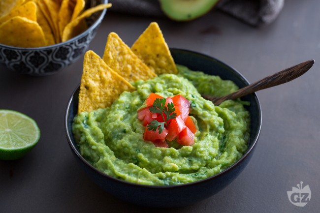

Guacamole

Description
My favorite easy to make dip for snacks
Ingredients
- 2-3 ripe avocados
- 2 cloves of garlic
- 100g of cherry tomatoes
- 2 tablespoons of vegan créme fraiche
- 1/2 of a lime, juice squeezed
Steps
- Slice the avocados open and remove the core. Scoop the pulp out of the avocados, put it in a bowl
and mash them with a fork
- Peel the garlic and use a garlic press to mince it. Add it into the bowl
- Finely chop the tomatoes and add them
- Finally add the créme fraiche & lime juice and stir it all together